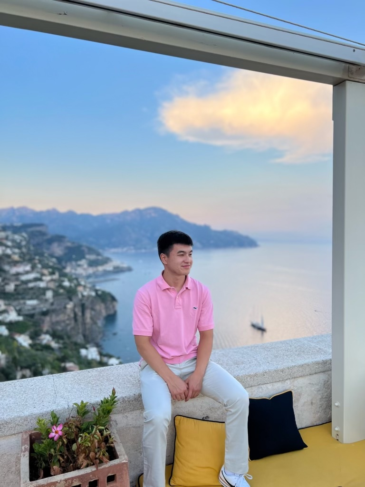

About Me
Hello! My name is John Rotondo, and I am currently pursuing a Bachelor of Science degree in Computer Science and Business at Northeastern University's Khoury College of Computer Sciences, with an expected graduation date of May 2025. My academic journey has been complemented by my time at the NUin New College of the Humanities in London, where I broadened my educational and cultural horizons.
My technical proficiencies encompass languages such as Java, Python, SQL, HTML, and Powershell, as well as software tools like Tableau, GitHub, Squarespace, Docker, ServiceNow, and AppSmith.
Outside of my academic and professional pursuits, I am actively involved in sports and team activities. I am a member of the Alpha Kappa Sigma Fraternity and participate in hockey, intramural soccer, tennis, and golf. These activities have not only been a source of enjoyment but have also helped me develop essential teamwork and leadership skills.